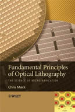

- Home |
- Blog |
- Lithography |
- Published Works |
- For Profit |
- About Chris
- | Gentleman
- | Scientist

(For a list of technical papers, click here.)
Chris A. Mack, Fundamental Principles of Optical Lithography: The Science of Microfabrication , John Wiley & Sons, (London: 2007).
Hardback ISBN: 0470018933; Paperback ISBN: 0470727306
DDC: 621.3815/31 22 LCC: TK7874.M196 2007
This text attempts a difficult task – to capture the fundamental principles of the incredibly fast-changing field of semiconductor microlithography in such a way that these principles may be effectively applied to past, present and future microfabrication technology generations. Its focus is on the underlying scientific principles of optical lithography, rather than its practice. It will serve equally well as a graduate-level university textbook (each chapter has an extensive set of homework problems) and as an industry resource.
Much of the material contained in this book is, of course, a tutorial review of the published literature on lithography and related sciences. But a significant portion is new work, having never before been published. Certainly, there is no other single book that covers the wide breadth of scientific disciplines needed in the practice of optical microlithography. Roughly speaking, the major topics are optics (imaging and thing film interference effects), photoresist chemistry (chemical reactions, diffusion, and development phenomenon), lithography as a manufacturing process (process control, critical dimension control, and overlay), and resolution enhancement technologies.
 Chris A. Mack, Field Guide to Optical Lithography, SPIE Field Guide Series Vol. FG06, (Bellingham, WA: 2006).
Chris A. Mack, Field Guide to Optical Lithography, SPIE Field Guide Series Vol. FG06, (Bellingham, WA: 2006).
ISBN: 0819462071 DDC: 621.381531 LCC: TK7874.M195 2006
The material in this Field Guide is a distillation of material put together by Chris Mack over the past 20 years, including notes from his graduate-level lithography course at the University of Texas at Austin. This Field Guide details the lithography process, image formation, imaging onto a photoresist, photoresist chemistry, and lithography control and optimization. An introduction to next-generation lithographic technologies is also included, as well as an extensive lithography glossary and a summation of salient equations critical to anyone involved in the lithography industry.
Chris A. Mack, Field Guide to Optical Lithography, in Japanese! (published in Japan by Optronics, 2008).
ISBN: 4902312336
Translated by Hiroo Kinoshita.
 Chris A. Mack, Inside PROLITH: A Comprehensive Guide to Optical Lithography Simulation, FINLE Technologies (Austin, TX: 1997).
Chris A. Mack, Inside PROLITH: A Comprehensive Guide to Optical Lithography Simulation, FINLE Technologies (Austin, TX: 1997).
Click the title to download a full pdf copy of this now out-of-print book.
Thanks to KLA-Tencor for permission to openly distribute this pdf.
C.A. Mack, “Microlithography”, Chapter 9, Semiconductor Manufacturing Handbook, Hwaiyu Geng, Ed., McGraw Hill ( New York: 2005).
Contributed “Microlithography” entry for the McGraw Hill Encyclopedia of Science & Technology, 9th Edition (2005).
Contributed lithography terms for: Comprehensive Dictionary of Electrical Engineering, Phillip A. Laplante, Ed., (CRC Press and IEEE Press, 1999).
C.A. Mack, “Optical Lithography Modeling,” Chapter 2, Microlithography Science and Technology, J. R. Sheats and B. W. Smith, editors, Marcel Dekker (New York: 1998) pp. 109-170.
C.A. Mack and A. R. Neureuther, “Optical Lithography Modeling,” Chapter 7, Handbook of Microlithography, Micromachining, and Microfabrication, Volume 1: Microlithography, P. Rai-Choudhury, editor, SPIE Press (Bellingham, WA: 1997) pp. 597-680.
R. Hershel and C. A. Mack, “Lumped Parameter Model for Optical Lithography,” Chapter 2, Lithography for VLSI, VLSI Electronics - Microstructure Science Volume 16, R. K. Watts and N. G. Einspruch, eds., Academic Press (New York:1987) pp. 19-55.
Modeling Solvent Effects in Optical Lithography
Modeling Solvent Effects in Optical Lithography (Haiku Version)
U.S. Patent 5,363,171, Photolithography exposure tool and method for in situ photoresist measurements and exposure control, November 8, 1994
U.S. Patent 6,968,253, Computer-implemented method and carrier medium configured to generate a set of process parameters for a lithography process, November 22, 2005
U.S. Patent 7,075,639, Method and Mark for Metrology of Phase Errors on Phase Shift Masks, July 11, 2006
U.S. Patent 7,142,941, Computer-implemented Method and Carrier Medium Configures to Generate a Set of Process Parameters and/or a List of Potential Causes of Deviations for a Lithography Process, November 28, 2006.
U.S. Patent 7,297,453, Systems and Methods for Mitigating Variances on a Patterned Wafer Using a Prediction Model, November 20, 2007.
U.S. Patent 7,300,725, Method for Determining and Correcting Reticle Variations, November 27, 2007.
U.S. Patent 7,300,729, Method for Monitoring a Reticle, November 27, 2007.
U.S. Patent 7,303,842, Systems and Methods for Modifying a Reticle’s Optical Properties, December 4, 2007.
U.S. Patent 7,352,453, Method for Process Optimization and Control by Comparison Between 2 or More Measured Scatterometry Signals, April 1, 2008.
U.S. Patent 7,368,208, Measuring Phase Errors on Phase Shift Masks, May 6, 2008.
U.S. Patent 7,382,447, Method for Determining Lithographic Focus and Exposure, June 3, 2008.
U.S. Patent 7,528,953, Target Acquisition and Overlay Metrology Based on Two Diffracted Orders Imaging, May 5, 2009.
U.S. Patent 7,566,517, Feature Printability Optimization by Optical Tool, July 28, 2009.
U.S. Patent 7,804,994, Overlay Metrology and Control Method, September 28, 2010.
While teaching various courses at the University of Texas at Austin, I have found errors in the textbooks that I have used (a completely natural occurrence). Here are my errata for some of those books, for the benefit of others who may be using these same texts.
Fundamentals of Electric Circuits, by Charles Alexander and Matthew Sadiku, 3rd Edition, McGraw-Hill
Engineering Electromagnetics, by William Hayt and John Buck, 7th Edition, McGraw-Hill
Optics, by Eugene Hecht, 4th Edition, Pearson Addison Wesley
Fabrication Engineering at the Micro- and Nanoscale, by Stephen Campbell, 4th Edition, Oxford University Press
“The Lithography Expert” (formerly the “The Lithography Tutor”), a quarterly column in Microlithography World, 1993 – 2008.
Regular columns in the Canon Submicron Focus newsletter, 1996 – 2005.
Regular columns in KLA-Tencor’s Yield Management Solutions magazine, 2001 – 2006.
Back to the Publications Home ...